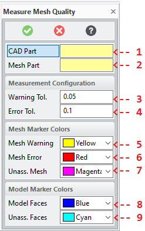
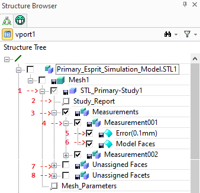
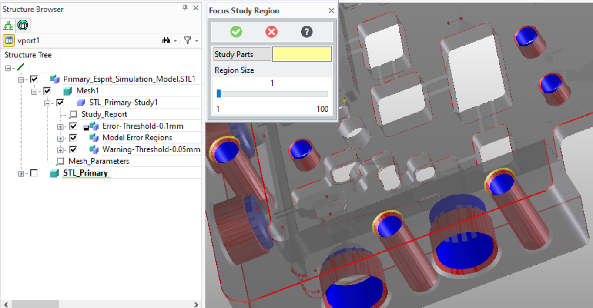
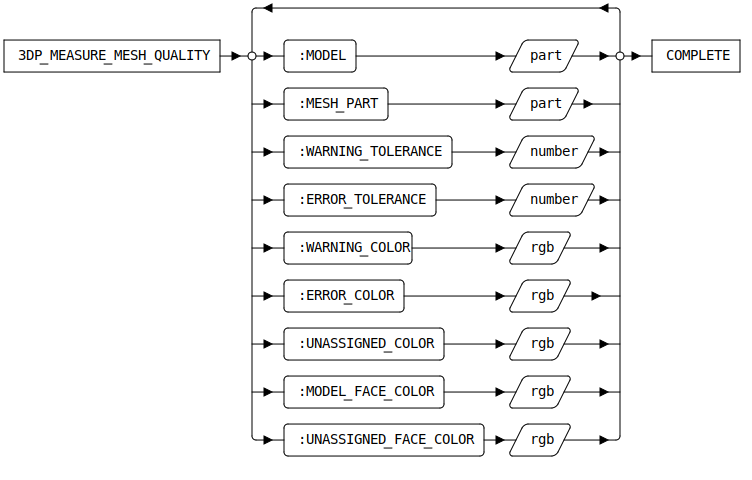

3DP_MEASURE_MESH_QUALITY [Public Dialog]
Package: 3d-printing (Nick name(s): :3dp)
Measure the quality of a mesh with respect to the part it was derived from.
The measurement results are displayed as a simple heat map on the mesh part. Heat map colors can be configured in the dialog.
Note Mesh part and CAD part have to be manually positioned prior to comparison e.g. by using the one or more part positioning commands provided on the Structure tab by:
- Right clicking the mesh part in the structure browser aand the selecting the Align Mesh command.
- Selecting the Extensions tab in the Modeling ribbon bar and selecting the Align Mesh action in the Manufacturing Data command group.

- The CAD part which was used to generate the mesh part.
See the dialog option
:MODEL. - The mesh part wich was generated from the CAD part.
See the dialog option
:MESH_PART. - The distance between facets of the mesh part to the corrsponding
faces of the CAD part which triggers a quality warning.
See the dialog option
:WARNING_TOLERANCE. - The distance between facets of the mesh part to the corrsponding
faces of the CAD part which triggers a quality error.
See the dialog option
:ERROR_TOLERANCE - The color to set on the facets whose distance to the CAD part
exceed the warning threshold.
See the dialog option
:WARNING_COLOR. - The color to set on the facets whose distance to the CAD part
exceed the error threshold.
See the dialog option
:ERROR_COLOR - The color to set on the facets which could not be associated with any face of the CAD part.
See the dialog option
:UNASSIGNED_COLOR - The color for marking CAD model faces which have associated facets with error or warning distances measured.
See the dialog option
:MODEL_FACE_COLOR - The color for marking CAD model faces which have no associated facets.
See the dialog option
:UNASSIGNED_FACE_COLOR

The analysis generates a quality study which is represented as a container (1) below the mesh geometry part. The container is named after the CAD model which was used for comparison. To make it easier to detect approximation errors of the mesh with respect to the CAD model following adjustments are made:
- The CAD Model is hidden (removed from the drawing list)
- The mesh part is set to semi-transparent.
The Study container is populated with at most with 3 assemblies (depending on the issues detected):
- The Measurements assembly (3) contains measurement details in indexed sub-assembies (4)
for each CAD model face. Each of these sub-assemblies (4) contains up to 3 face parts.
- A face part containing mesh facets exceeding the error threshold (5), if applicable. The color of this part
is determined by the
:ERROR_COLOR. - A face part containing mesh facets exceeding the warning threshold, if applicable. The color of this part
is determined by the
:WARNING_COLOR. - A face part containg a single model face (6) for which error or warning facets where detected.
The color of this part is determined by the
:MODEL_FACE_COLOR.
- A face part containing mesh facets exceeding the error threshold (5), if applicable. The color of this part
is determined by the
- The Unassigned Faces assembly (7) containing model faces parts each of which represents a group of connected
faces which could not be assigned to any facet. All parts in this assembly are colored with the
:UNASSIGNED_FACE_COLOR. - The Unassigned Facets assembly (8) containing face parts each of which represents a group of connected
facets which could not be assigned to any face. All parts in this assembly are colored with the
:UNASSIGNED_COLOR.
To view a textual report of study parameters and results, right-click on the Study Report feature (2) and select the Show Study Report.
Quality Study Evaluation

The fastest way to assess the approximation quality to show only the Mesh (displayed as Mesh1 in the Structure Browser), and the Mesh Study Container (displayed as STL_Primary-Study1 in the Structure Browser).
To focus on individial regions of the part use the 3DP_FOCUS_STUDY_REGION.
Syntax

Options
:MODEL{string|SEL_ITEM}- Either a path name or a part handle for the CAD part from which the mesh was derived.
:MESH_PART{string|SEL_ITEM}- Either a path name or a part handle for the mesh part which represents a facetted version of the CAD part.
:WARNING_TOLERANCE{number}- The facet-to-model distance threshold beyond which facets are marked with the warning color.
:WARNING_COLOR{integer}- The RGB warning color for marking facets.
:ERROR_TOLERANCE{number}- The facet-to-model distance threshold beyond which facets are marked with the error color.
:ERROR_COLOR{integer}- The RGB error color for marking facets.
:MODEL_FACES_COLOR{integer}-
The RGB error color for marking CAD model faces not assigned to any facet..